10. Radiative Transfer (RT)
RAMSES can run with radiative transfer (RT=1): on top of the gas it transports, per photon group g, a photon number density Npgand the photon fluxFxg/Fyg/Fzg (an M1 moment field, so nvarrt = 4·nGroups). Mera reads it with getrt, exactly like gethydro.
The whole tutorial is one pipeline: getinfo → getrt / gethydro → getvar → projection. Two objects, one bridge:
- the photon field lives in the RT object (
getrt), - the ionization state it produces (xHII, …) lives in the hydro object (
gethydro), - Mera connects them through the RT descriptor index
iIons.
We build it up simplest-first: one striking map in three calls, then RT photon fields, then the hydro–RT bridge, then physical units, then a reference card.
The physics we expect to see
The example is the RAMSES Strömgren-sphere test (stromgren.nml, here ramses-2025.05): a point source at the box corner ionizing a uniform neutral hydrogen medium (X=1, n_H≈10⁻³ cm⁻³, box 15 kpc, 3 photon groups).
A source emitting Ṅγ ionizing photons/s into gas of density n_H builds an ionized sphere whose photo-ionizations balance recombinations — the Strömgren sphere of radius
\[R_S = \left(\frac{3\,\dot N_\gamma}{4\pi\,\alpha_B\,n_H^2}\right)^{1/3},\]
bounded by a thin ionization front where xHII drops from ≈1 to ≈0. Because the medium is uniform and near photoionization equilibrium, both xHII and temperature are essentially single-valued functions of radius. The maps and profiles below recover exactly this picture (and we check R_S quantitatively at the end).
Hello RT — three calls and a map
The simplest end-to-end example: load the snapshot, load the RT data, project one field. projection flattens the 3D field onto a 2D map (here the volume-weighted average along z; the modes are defined once below). :Np_total is the sum over all groups — it needs no group or descriptor knowledge, so it is the perfect first look.
using Mera, PyPlot, Statistics
rc("figure", dpi=300); rc("savefig", dpi=300)
"Show a 2D Mera map (transpose to x–y; optional log10 with non-positive values blanked)."
function show_map(M; logscale=false, cmap="inferno", clabel="", ttl="")
A = permutedims(M)
logscale && (A = map(x -> x > 0 ? log10(x) : NaN, A))
figure(figsize=(5,4)); imshow(A, origin="lower", cmap=cmap)
colorbar(label=clabel); title(ttl)
xlabel("x [pixel]"); ylabel("y [pixel]"); tight_layout()
end
path = "/Volumes/FASTStorage/Simulations/Mera-Tests/rt_stromgren"
info = getinfo(3, path) # prints the simulation overview incl. the RT block
rt = getrt(info, verbose=false) # → RtDataType, like gethydro
p = projection(rt, :Np_total, verbose=false, show_progress=false)
show_map(p.maps[:Np_total]; logscale=true,
clabel=L"$\log_{10}\,N_p^{\rm total}$", ttl="Strömgren sphere: total photon density")[Mera]: 2026-06-03T16:56:50.111
Code: RAMSES
output [3] summary:
mtime: 2026-06-01T21:54:33.519
ctime: 2026-06-01T21:54:33.519
=======================================================
simulation time: 20.02 [Myr]
boxlen: 15.0 [kpc]
ncpu: 1
ndim: 3
cosmological: false
-------------------------------------------------------
amr: true
level(s): 6 - 7 --> cellsize(s): 234.38 [pc] - 117.19 [pc]
-------------------------------------------------------
hydro: true
hydro-variables:
8 --> (:rho, :vx, :vy, :vz, :p, :var6, :var7, :var8)
hydro-descriptor: (:density, :velocity_x, :velocity_y, :velocity_z, :pressure, :scalar_00, :scalar_01, :scalar_02)
γ: 1.4
gravity: false
particles: false
-------------------------------------------------------
rt: true
rt-variables: 12
nIons: 3
nGroups: 3
iIons: 6
photon group energies [eV]:
[18.85, 35.08, 65.67]
-------------------------------------------------------
clumps: false
-------------------------------------------------------
namelist-file: ("&COOLING_PARAMS", "&AMR_PARAMS", "&OUTPUT_PARAMS", "&BOUNDARY_PARAMS", "&RT_PARAMS", "&RT_GROUPS\t\t\t! Blackbody at T=1d5 Kelvin", "&UNITS_PARAMS", "&RUN_PARAMS", "&HYDRO_PARAMS", "&INIT_PARAMS", "&REFINE_PARAMS")
-------------------------------------------------------
timer-file: true
compilation-file: true
makefile: true
patchfile: true
=======================================================
Processing files: 100%|██████████████████████████████████████████████████| Time: 0:00:02 ( 2.63 s/it)
✓ File processing complete! Combining results...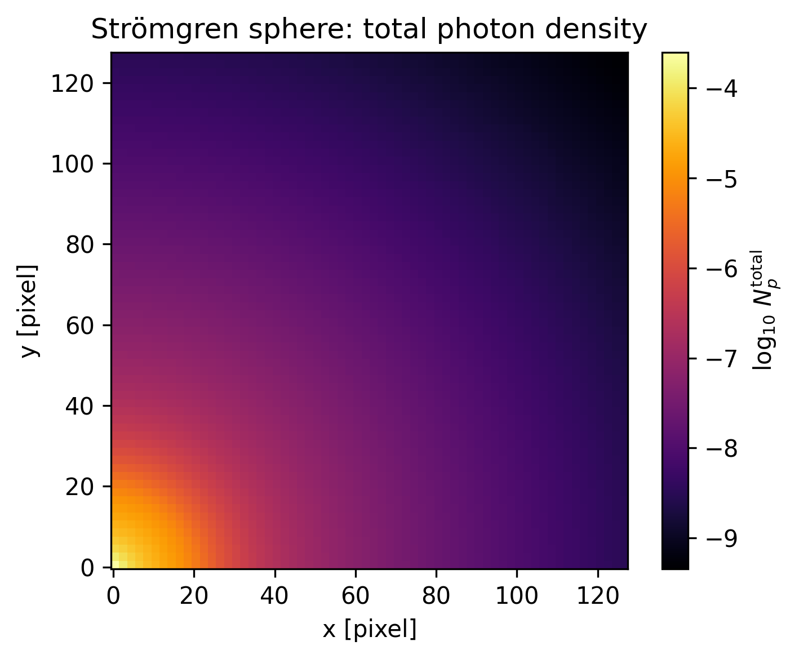
Takeaway: getinfo → getrt → projection → show_map already reveals the ionized sphere. Everything below varies what we put through this same pipeline.
What is in the RT object?
getinfo reported the RT block; programmatically the available photon fields are listed in info.rt_variable_list, and the leaf-cell table is rt.data (use viewfields(rt) to browse the object's fields).
println("RT run? ", info.rt, " nvarrt = ", info.nvarrt, " (= 4 × nGroups)")
info.rt_variable_list # the per-group symbols Mera exposes: :Np1, :Fx1, :Fy1, :Fz1, …RT run? true nvarrt = 12 (= 4 × nGroups)12-element Vector{Symbol}:
:Np1
:Fx1
:Fy1
:Fz1
:Np2
:Fx2
:Fy2
:Fz2
:Np3
:Fx3
:Fy3
:Fz3Variables with getvar — the simplest form
getvar(object, :symbol) returns one array (per leaf cell). That is the whole idea; later we pass a vector of symbols to get several at once, and a unit symbol to convert.
Np1 = getvar(rt, :Np1) # one photon group, code units
(Np1_min = minimum(Np1), Np1_max = maximum(Np1))(Np1_min = 3.065945823640658e-50, Np1_max = 0.0041809294396080166)A first physics hook: radial fall-off
Binning the total photon density by distance from the (corner) source shows the expected geometric ~1/r² dilution, then a steeper drop once absorption sets in near the front. We define a tiny object-agnostic helper radial_mean here and reuse it later on the gas data. This also introduces the getvar(obj, :var, :unit) conversion form (radius in kpc).
"Radial mean of q(r) in nbins (plain arrays; empty bins → NaN). Reused on rt and gas."
function radial_mean(r, q; nbins=40)
edges = range(minimum(r), maximum(r), length=nbins+1)
r_centers = [(edges[i] + edges[i+1]) / 2 for i in 1:nbins]
means = [ (m = (r .>= edges[i]) .& (r .< edges[i+1]); any(m) ? sum(q[m]) / count(m) : NaN) for i in 1:nbins ]
return r_centers, means
end
r = getvar(rt, :r_sphere, :kpc, center=[0.0, 0.0, 0.0]) # source at the corner
rprof, npprof = radial_mean(r, getvar(rt, :Np_total))
figure(figsize=(6,4)); semilogy(rprof, npprof, "-o", ms=3, color="darkorange")
xlabel("r [kpc]"); ylabel(L"$\langle N_p^{\rm total}\rangle$ (code units)")
title("Radial photon-density profile (≈ 1/r² then cutoff)"); tight_layout();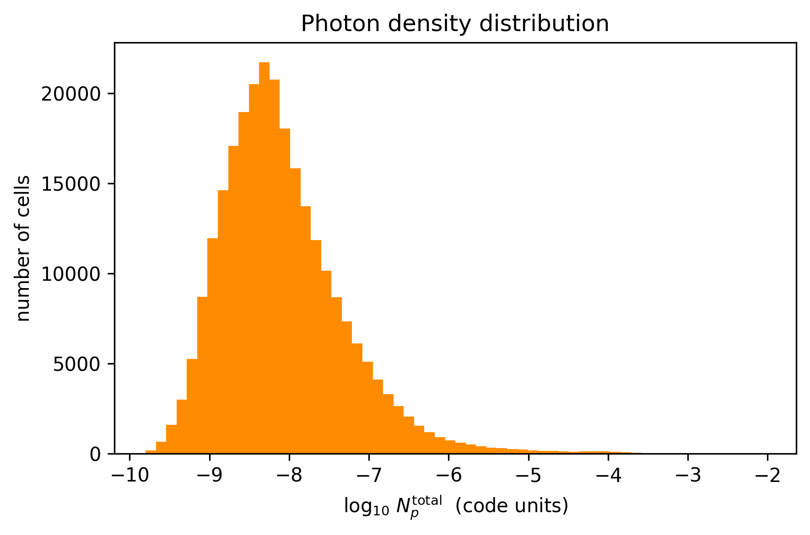
Region selection
subregion and shellregion work on an RtDataType just like on hydro — handy for zooms and shells. Note the two centre conventions used here: [:bc] = box centre (7.5 kpc), while the source sits at the corner [0,0,0] (used for the radial profiles).
sub = subregion(rt, :sphere, radius=5.0, center=[:bc], range_unit=:kpc, verbose=false)
shell = shellregion(rt, :sphere, radius=[3.0, 6.0], center=[:bc], range_unit=:kpc, verbose=false)
@show (full_cells = length(rt.data), sphere_cells = length(sub.data), shell_cells = length(shell.data))
# payoff: the selection is itself an RtDataType — project the 5 kpc sphere
psub = projection(sub, :Np_total, verbose=false, show_progress=false)
show_map(psub.maps[:Np_total]; logscale=true, clabel=L"$\log_{10}\,N_p^{\rm total}$",
ttl="subregion (5 kpc sphere): total photon density")(full_cells = length(rt.data), sphere_cells = length(sub.data), shell_cells = length(shell.data)) = (full_cells = 262144, sphere_cells = 45235, shell_cells = 66250)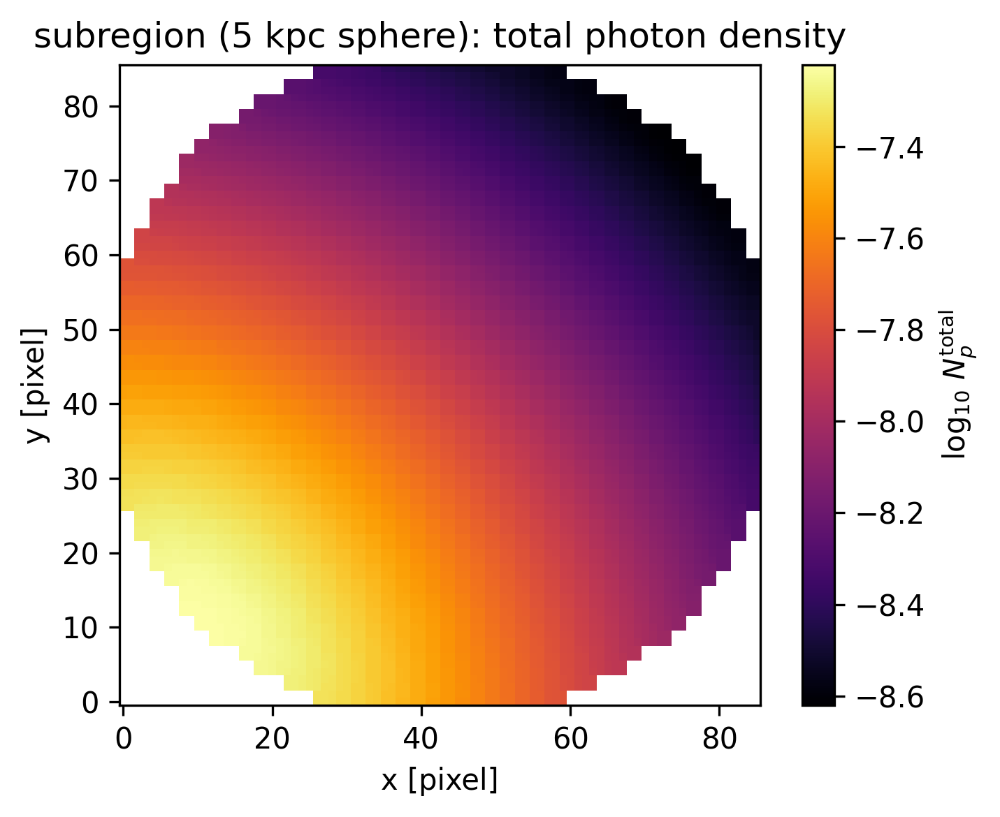
The projection model (once)
A projection collapses the 3D AMR field onto a 2D pixel grid. Two modes:
| mode | meaning | use |
|---|---|---|
:standard (default) | volume-weighted average along the line of sight | maps of intensive fields (xHII, reduced flux) |
:sum | volume-weighted sum per pixel, Σ q·V_cell | totals (the whole map sums to the box total) |
RT defaults mass-weighting → volume-weighting (RT carries no mass). A thin zrange turns a projection into a slice. Note: :sum carries a cell-volume factor, so it is proportional to a column total, not the path-length integral ∫q dz; RT fields have no :sd (surface-density) analogue.
Photon flux — the vectorial field (M1)
RT is vectorial: each group carries a flux F = (Fx, Fy, Fz). The reduced flux
\[f = \frac{|\mathbf F|}{c\,N_p} \in [0,1]\]
measures how beamed the radiation is in the M1 closure: f → 1 is a free-streaming radial beam, f → 0 is an isotropic field. Here we also meet the one-pass multi-variable form projection(rt, [:Np1, :Fx1, :Fy1]), which returns all three maps in a single call, and overlay the flux direction as arrows on the photon-density map.
@show maximum(getvar(rt, :reducedflux1)) # bounded to [0,1]; ~0.99 along the rays
@show maximum(getvar(rt, :Fmag1)) # |F| of group 1 (code units)
pf = projection(rt, [:Np1, :Fx1, :Fy1], verbose=false, show_progress=false) # 3 maps, 1 pass
fx = permutedims(pf.maps[:Fx1]); fy = permutedims(pf.maps[:Fy1])
mag = sqrt.(fx.^2 .+ fy.^2) .+ 1e-50
u = fx ./ mag; v = fy ./ mag # unit vectors (direction only)
ny, nx = size(u); s = 8; xs = collect(1:s:nx); ys = collect(1:s:ny)
prf = projection(rt, :reducedflux1, verbose=false, show_progress=false)
show_map(prf.maps[:reducedflux1]; cmap="viridis", clabel=L"$f=|F|/(c\,N_p)$", ttl="Reduced flux (group 1)")
show_map(pf.maps[:Np1]; logscale=true, clabel=L"$\log_{10}\,N_p^{1}$", ttl="Flux direction over Np (group 1)")
quiver(xs, ys, u[ys, xs], v[ys, xs], color="cyan", pivot="mid", alpha=0.9);maximum(getvar(rt, :reducedflux1)) = 0.9927071564466189
maximum(getvar(rt, :Fmag1)) = 0.0005397420584191681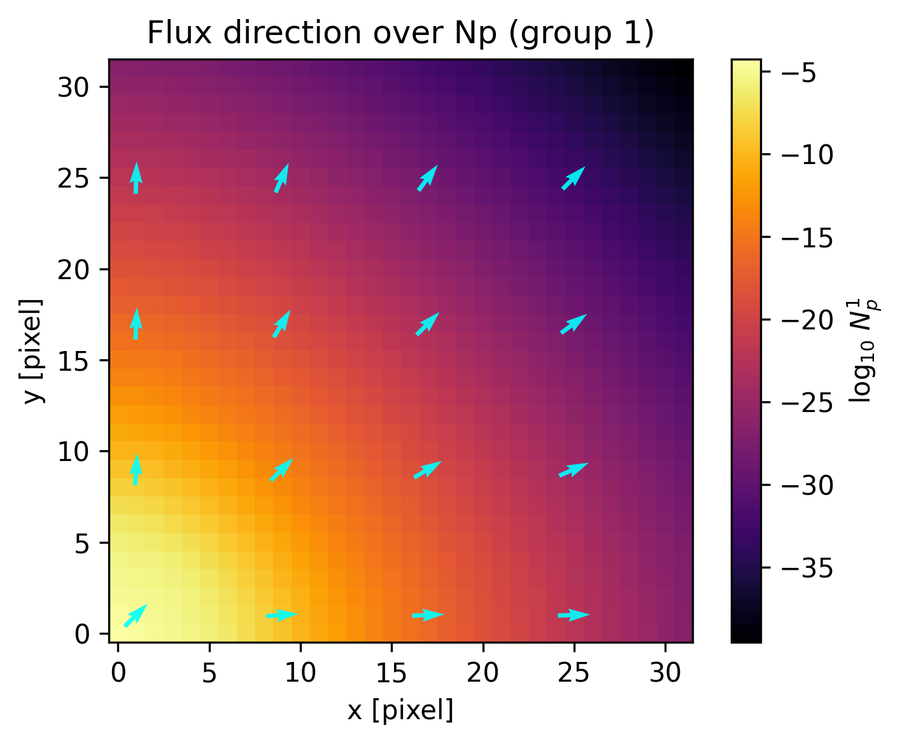
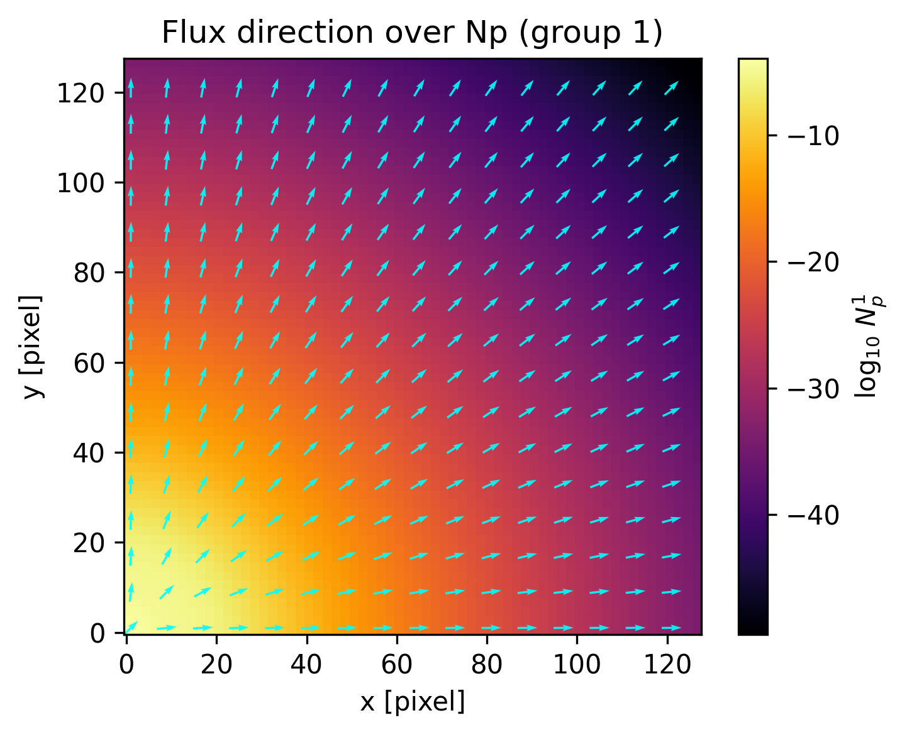
Photon groups & energy bands
Why Np1, Np2, Np3? RAMSES-RT splits the spectrum into nGroups energy bands set at the ionization thresholds of H and He, so each band ionizes a species:
| group | band [eV] | ionizes (threshold) |
|---|---|---|
| 1 | 13.6 – 24.59 | H I → H II (13.6 eV) |
| 2 | 24.59 – 54.42 | He I → He II (24.59 eV) |
| 3 | > 54.42 | He II → He III (54.42 eV) |
These are the generic RAMSES-RT band definitions. This run is pure hydrogen (X=1, Y=0), so all helium cross-sections are zero — groups 2 and 3 here simply supply harder hydrogen-ionizing photons (smaller H I cross-sections), and only the 13.6 eV H I threshold is physically active.
The band edges (groupL0/L1) and the SED-averaged mean energy per band (group_egy) live in info.descriptor.rt / info.descriptor.rtPhotonGroups. Resolving bands lets the code follow spectral hardening — higher-energy photons have smaller cross-sections ≈ (ν/ν₀)⁻³, so they penetrate deeper and raise the field's mean energy outward. The bar chart is the integrated photon budget per band (not a spatial map).
This completes the RT-native tour — raw fields, geometry, regions, projection modes, flux vectors and spectral bands — all through the same getvar / projection pipeline.
@show info.descriptor.rt[:group_egy] # mean photon energy per band [eV]
ng = info.nvarrt ÷ 4
totals = [sum(getvar(rt, Symbol("Np", g))) for g in 1:ng]
L0 = info.descriptor.rtPhotonGroups[:L0_eV]; L1 = info.descriptor.rtPhotonGroups[:L1_eV]
bands = ["G$g\n$(round(L0[g],digits=1))–$(L1[g]==0 ? "∞" : string(round(L1[g],digits=1))) eV" for g in 1:ng]
figure(figsize=(5.6,3.6)); bar(1:ng, totals, color="purple")
ylabel("total Np (code units)"); xticks(1:ng, bands)
title("Photon content per energy band"); tight_layout();info.descriptor.rt[:group_egy] = [18.85, 35.08, 65.67]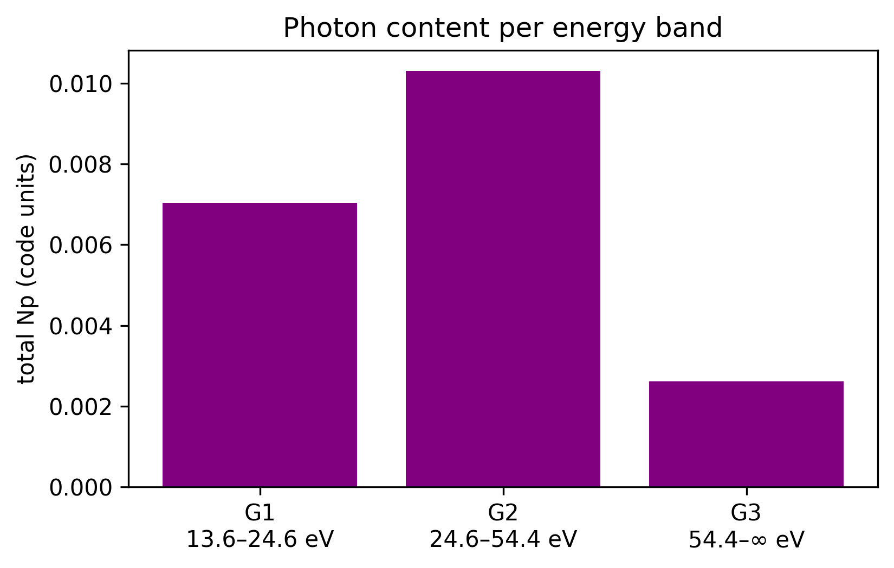
The hydro–RT bridge
This is the conceptual pivot. The photon transport lives in rt; the ionization state it produces — xHII, temperature, electron density — lives in the hydro data as passive scalars. Load it with gethydro; Mera locates the ionization fractions automatically via the RT descriptor index iIons, so you ask for them by name (:xHII, …). For this pure-hydrogen run (X=1, Y=0) the free-electron density equals the HII density (n_e = n_HII).
gas = gethydro(info, verbose=false, show_progress=false) 0.786295 seconds (11.52 M allocations: 725.564 MiB, 4.93% gc time, 58.62% compilation time)HydroDataType(Table with 262144 rows, 12 columns:
Columns:
# colname type
────────────────────
1 level Int64
2 cx Int64
3 cy Int64
4 cz Int64
5 rho Float64
6 vx Float64
7 vy Float64
8 vz Float64
9 p Float64
10 var6 Float64
11 var7 Float64
12 var8 Float64, InfoType(3, "/Volumes/FASTStorage/Simulations/Mera-Tests/rt_stromgren", FileNamesType("/Volumes/FASTStorage/Simulations/Mera-Tests/rt_stromgren/output_00003", "/Volumes/FASTStorage/Simulations/Mera-Tests/rt_stromgren/output_00003/info_00003.txt", "/Volumes/FASTStorage/Simulations/Mera-Tests/rt_stromgren/output_00003/amr_00003.", "/Volumes/FASTStorage/Simulations/Mera-Tests/rt_stromgren/output_00003/hydro_00003.", "/Volumes/FASTStorage/Simulations/Mera-Tests/rt_stromgren/output_00003/hydro_file_descriptor.txt", "/Volumes/FASTStorage/Simulations/Mera-Tests/rt_stromgren/output_00003/grav_00003.", "/Volumes/FASTStorage/Simulations/Mera-Tests/rt_stromgren/output_00003/part_00003.", "/Volumes/FASTStorage/Simulations/Mera-Tests/rt_stromgren/output_00003/part_file_descriptor.txt", "/Volumes/FASTStorage/Simulations/Mera-Tests/rt_stromgren/output_00003/rt_00003.", "/Volumes/FASTStorage/Simulations/Mera-Tests/rt_stromgren/output_00003/rt_file_descriptor.txt", "/Volumes/FASTStorage/Simulations/Mera-Tests/rt_stromgren/output_00003/info_rt_00003.txt", "/Volumes/FASTStorage/Simulations/Mera-Tests/rt_stromgren/output_00003/clump_00003.", "/Volumes/FASTStorage/Simulations/Mera-Tests/rt_stromgren/output_00003/timer_00003.txt", "/Volumes/FASTStorage/Simulations/Mera-Tests/rt_stromgren/output_00003/header_00003.txt", "/Volumes/FASTStorage/Simulations/Mera-Tests/rt_stromgren/output_00003/namelist.txt", "/Volumes/FASTStorage/Simulations/Mera-Tests/rt_stromgren/output_00003/compilation.txt", "/Volumes/FASTStorage/Simulations/Mera-Tests/rt_stromgren/output_00003/makefile.txt", "/Volumes/FASTStorage/Simulations/Mera-Tests/rt_stromgren/output_00003/patches.txt"), "RAMSES", Dates.DateTime("2026-06-01T21:54:33.519"), Dates.DateTime("2026-06-01T21:54:33.519"), 1, 3, 6, 7, 15.0, 20.0180922235345, 1.0, 1.0, 1.0, 0.0, 0.0, 0.045, 3.08568025e21, 1.66e-24, 4.877090903692205e40, 9.77813951206781e7, 3.1556926e13, 1.4, true, 8, 5, 12, [:rho, :vx, :vy, :vz, :p, :var6, :var7, :var8], [:epot, :ax, :ay, :az], [:vx, :vy, :vz, :mass, :birth], [:Np1, :Fx1, :Fy1, :Fz1, :Np2, :Fx2, :Fy2, :Fz2, :Np3, :Fx3, :Fy3, :Fz3], Symbol[], Symbol[], DescriptorType(1, [:density, :velocity_x, :velocity_y, :velocity_z, :pressure, :scalar_00, :scalar_01, :scalar_02], ["d", "d", "d", "d", "d", "d", "d", "d"], false, true, 0, [:vx, :vy, :vz, :mass, :birth], String[], false, false, [:epot, :ax, :ay, :az], false, false, 1, Dict{Any, Any}(:g_star => 1.6, :T2_star => 0.0, :nRTvar => 12, :nIons => 3, :group_egy => [18.85, 35.08, 65.67], :rt_c_frac => 0.01, :unit_pf => 9.77813951206781e7, :n_star => 0.1, :X_fraction => 1.0, :unit_np => 1.0…), Dict{Any, Any}(:L0_eV => [13.6, 24.59, 54.42], 2 => Dict{Symbol, Any}(:cse_cm2 => [5.04e-19, 0.0, 0.0], :egy_eV => 35.08, :csn_cm2 => [5.69e-19, 0.0, 0.0]), :spec2group => [1, 2, 3], :L1_eV => [24.59, 54.42, 0.0], 3 => Dict{Symbol, Any}(:cse_cm2 => [7.46e-20, 0.0, 0.0], :egy_eV => 65.67, :csn_cm2 => [7.89e-20, 0.0, 0.0]), 1 => Dict{Symbol, Any}(:cse_cm2 => [2.78e-18, 0.0, 0.0], :egy_eV => 18.85, :csn_cm2 => [3.0e-18, 0.0, 0.0])), false, true, Symbol[], false, false, Symbol[], false, false), true, false, false, true, false, false, true, Dict{Any, Any}("&COOLING_PARAMS" => Dict{Any, Any}("cooling" => ".true."), "&AMR_PARAMS" => Dict{Any, Any}("levelmax" => "7", "ngridmax" => "500000", "boxlen" => "15.\t\t\t! 1 kpc", "levelmin" => "6", "nexpand" => "1"), "&OUTPUT_PARAMS" => Dict{Any, Any}("delta_tout" => "10.", "tend" => "30."), "&BOUNDARY_PARAMS" => Dict{Any, Any}("nboundary" => "6", "jbound_min" => " 0, 0, -1, 1, -1, -1", "kbound_max" => " 0, 0, 0, 0, -1, 1", "bound_type" => " 1, 2, 1, 2, 1, 2", "ibound_max" => "-1, 1, 1, 1, 1, 1", "ibound_min" => "-1, 1, -1, -1, -1, -1", "jbound_max" => " 0, 0, -1, 1, 1, 1", "kbound_min" => " 0, 0, 0, 0, -1, 1"), "&RT_PARAMS" => Dict{Any, Any}("rt_source_type" => "3*'point'", "&RT_GROUPS\t\t\t! Blackbody at T" => "1d5 Kelvin", "rt_flux_scheme" => "'glf'", "rt_w_source" => "3*0", "rt_c_fraction" => "0.01", "rt_v_source" => "3*0", "rt_src_z_center" => "3*0.", "rt_src_length_y" => "3*1.0", "rt_src_length_z" => "3*1.0", "rt_courant_factor" => "0.8"…), "&RT_GROUPS\t\t\t! Blackbody at T=1d5 Kelvin" => Dict{Any, Any}("group_csn(2,:)" => " 5.69d-19, 0.,0. ! pck 2-> HI, HeI, HeII", "group_cse(2,:)" => " 5.04d-19, 0.,0. ! pck 2-> HI, HeI, HeII", "spec2group " => " 1,2,3 ! HI, HeI, HeII -> pck", "group_egy " => " 18.85, 35.079, 65.666", "group_cse(1,:)" => " 2.78d-18, 0.,0. ! pck 1-> HI, HeI, HeII", "group_csn(3,:)" => " 7.89d-20, 0.,0. ! pck 3-> HI, HeI, HeII", "group_csn(1,:)" => " 3.00d-18, 0.,0. ! pck 1-> HI, HeI, HeII", "group_cse(3,:)" => " 7.46d-20, 0.,0. ! pck 3-> HI, HeI, HeII"), "&UNITS_PARAMS" => Dict{Any, Any}("units_density" => "1.66d-24", "units_time" => "3.1556926d13", "units_length" => "3.08568025d21"), "&RUN_PARAMS" => Dict{Any, Any}("nsubcycle" => "10*1", "rt" => ".true.", "verbose" => ".false.", "nremap" => "0", "nrestart" => "0", "hydro" => ".true."), "&HYDRO_PARAMS" => Dict{Any, Any}("slope_type" => "2", "gamma" => "1.4", "courant_factor" => "0.8", "riemann" => "'hllc'", "scheme" => "'muscl'"), "&INIT_PARAMS" => Dict{Any, Any}("x_center" => "7.5", "region_type(1)" => "'square'", "y_center" => "7.5", "nregion" => "1", "length_z" => "100.0", "length_x" => "100.0", "z_center" => "7.5", "d_region" => "1d-3\t\t \t ! 1e-3 hydrogen atoms per cc", "var_region(1,1)" => "1e-6", "length_y" => "100.0"…)…), false, true, Mera.FilesContentType(["#############################################################################", "# If you have problems with this makefile, contact Romain.Teyssier@gmail.com", "#############################################################################", "# Compilation time parameters", "", "# Do we want a debug build? 1=Yes, 0=No", "DEBUG = 0", "# Do we want to test coverage?", "GCOV = 0", "# Compiler flavor: GNU or INTEL" … "\t\$(FC) -O0 -c write_patch.f90 -o \$@", "%.o:%.F", "\t\$(F90) \$(FFLAGS) -c \$^ -o \$@ \$(LIBS_OBJ) \$(LIBS_OBJ_TURB)", "%.o:%.f90", "\t\$(F90) \$(FFLAGS) -c \$^ -o \$@ \$(LIBS_OBJ) \$(LIBS_OBJ_TURB)", "FORCE:", "#############################################################################", "clean:", "\trm -f *.o *.\$(MOD) *.i", "#############################################################################"], ["", " seconds % STEP (rank= 1)", " 9.589 1.7 coarse levels ", " 2.531 0.5 refine ", " 205.885 36.7 radiative transfer ", " 3.515 0.6 courant ", " 1.144 0.2 hydro - set unew ", " 247.685 44.2 hydro - godunov ", " 1.360 0.2 hydro - set uold ", " 59.112 10.5 cooling ", " 1.032 0.2 hydro - ghostzones ", " 28.067 5.0 flag ", " 560.623 100.0 TOTAL"], ["no patches", " "]), true, true, true, 0, ScalesType002(0.0010000008648732505, 1.0000008648732506, 1000.0008648732505, 1.0000008648732505e6, 3261.5665977832837, 2.0626498462588077e23, 3.08568025e16, 3.08568025e19, 3.08568025e21, 3.0856802499999998e22, 3.08568025e25, 1.0000025946219956e-9, 1.0000025946219957, 1.0000025946219956e9, 1.0000025946219955e18, 3.4695947530005516e10, 8.775594075372522e69, 2.9380065684892807e49, 2.93800656848928e58, 2.93800656848928e64, 2.93800656848928e67, 2.93800656848928e76, 0.02451901990607664, 0.02451901990607664, 1.66e-24, 24.51904111192109, 24.51904111192109, 0.005122229215, 0.0009999786422288134, 0.9999786422288134, 999978.6422288134, 3.1556926e13, 3.1556926e16, 2.4519083523665e7, 2.4519083523665e7, 8.166322132032091e12, 2.5694187983395264e10, 4.877090903692205e40, 977.813951206781, 977813.951206781, 9.77813951206781e7, 0.76, 4.663084755571995e56, 1.587159404469864e-8, 1.1495748770830704e8, 1.1495748770830704e8, 1.5125985224777243e8, 1.5125985224777243e8, 1.587159404469864e-8, 1.587159404469864e-8, 1.1495748770830704e8, 1.1495748770830704e8, 6.925149861946208e31, 6.831698820714928e65, 3.3774585398403183e72, 3.3774585398403183e65, 1.1495748770830706e8, 1.1495748770830705e9, 1.380649e-16, 1.4715262056331354e70, 1.4715262056331354e70, 1.4715262056331355e71, 0.0004465963871398189, 446.5963871398189, 446.5963871398189, 4.465963871398189e-8, 2.9104685816882255e68, 2.9104685816882255e65, 2.9104685816882256e62, 1.4776739520104065e43, 3.860172288428439e9, 3.860172288428439e9, 3.4036683604631933e-65, 1.1584988366605846e-120, 0.76, 302.98265527339925, 5.0295120775384285e-22, 5.0295120775384285e-22, 50.295120775384284, 50295.12077538428, 5.0295120775384285e7, 3.08568025e21, 3.08568025e21, 3.0985716137458414e-6, 3.098571613745841e-8, 3.0985716137458415e-11, 3.09843657823729e-9, 9.56120123174617e15, 9.56120123174617e8, 956120.123174617, 1.5871594044698644e-8, 4.663084755571996e56, 5.143628878818097e-30, 1.004177802851038e-27, 3.08568025e21, 4.877090903692205e40, 3.1556926e13, 1.0, 2.25213337e-314, 2.2521333856e-314, 2.2521334014e-314, 2.252133457e-314, 2.350381122e-314, 2.3891428643e-314, 2.3891428643e-314, 2.4239358445e-314, 2.4239358445e-314, 2.4239358445e-314, 2.4239358445e-314, 2.4239358445e-314, 2.4239358445e-314, 9.56120123174617e15, 2.3891428643e-314, 3.08568025e21, 4.877090903692205e40, 4.877090903692205e40, 3.1556926e13, 4.663084755571995e56, 4.663084755571995e56, 1.0, 2.3891428643e-314, 2.4239358445e-314, 3.0985716137458414e-6, 3.0985716137458414e-6, 3.0985716137458414e-6, 3.0985716137458414e-6, 3.0985716137458414e-6, 3.08568025e21, 3.08568025e21, 1.0, 1.0, 1.0, 57.29577951308232), GridInfoType(500000, 982, 3, 3, 3, 7, 6, 46443, [0.0, 1.6777216e7], Bool[0]), PartInfoType(0.0, 10.000213582273508, 0.0, 0, 0, 0, 0, 0, 0, 0, 0, 0, 0, 0, 0, 0, 0), CompilationInfoType(" 06/01/26-23:43:16", " /Applications/Xcode.app/Contents/Developer/usr/bin/make EXEC", " ", " ", " HEAD"), PhysicalUnitsType002(0.01495978707, 3.08567758128e24, 3.08567758128e21, 3.08567758128e18, 3.08567758128e15, 9.4607304725808e17, 1.9891e33, 1.9891e33, 5.9722e27, 1.89813e30, 6.96e10, 6.96e10, 9.1093837015e-28, 1.67262192369e-24, 1.67492749804e-24, 1.66e-24, 1.6605390666e-24, 6.02214076e23, 2.99792458e10, 6.6743e-8, 1.380649e-16, 1.380649e-16, 6.62607015e-27, 1.0545718176461565e-27, 5.670374419e-5, 6.6524587321e-25, 0.0072973525693, 8.314462618e7, 1.602176634e-12, 1.602176634e-9, 1.602176634e-6, 0.001602176634, 3.828e33, 3.828e33, 1.6605390666e-24, 86400.0, 3600.0, 60.0, 3.15576e16, 3.15576e13, 3.15576e7)), 6, 7, 15.0, [0.0, 1.0, 0.0, 1.0, 0.0, 1.0], [1, 2, 3, 4, 5, 6, 7, 8], Dict{Any, Any}(), 0.0, 0.0, ScalesType002(0.0010000008648732505, 1.0000008648732506, 1000.0008648732505, 1.0000008648732505e6, 3261.5665977832837, 2.0626498462588077e23, 3.08568025e16, 3.08568025e19, 3.08568025e21, 3.0856802499999998e22, 3.08568025e25, 1.0000025946219956e-9, 1.0000025946219957, 1.0000025946219956e9, 1.0000025946219955e18, 3.4695947530005516e10, 8.775594075372522e69, 2.9380065684892807e49, 2.93800656848928e58, 2.93800656848928e64, 2.93800656848928e67, 2.93800656848928e76, 0.02451901990607664, 0.02451901990607664, 1.66e-24, 24.51904111192109, 24.51904111192109, 0.005122229215, 0.0009999786422288134, 0.9999786422288134, 999978.6422288134, 3.1556926e13, 3.1556926e16, 2.4519083523665e7, 2.4519083523665e7, 8.166322132032091e12, 2.5694187983395264e10, 4.877090903692205e40, 977.813951206781, 977813.951206781, 9.77813951206781e7, 0.76, 4.663084755571995e56, 1.587159404469864e-8, 1.1495748770830704e8, 1.1495748770830704e8, 1.5125985224777243e8, 1.5125985224777243e8, 1.587159404469864e-8, 1.587159404469864e-8, 1.1495748770830704e8, 1.1495748770830704e8, 6.925149861946208e31, 6.831698820714928e65, 3.3774585398403183e72, 3.3774585398403183e65, 1.1495748770830706e8, 1.1495748770830705e9, 1.380649e-16, 1.4715262056331354e70, 1.4715262056331354e70, 1.4715262056331355e71, 0.0004465963871398189, 446.5963871398189, 446.5963871398189, 4.465963871398189e-8, 2.9104685816882255e68, 2.9104685816882255e65, 2.9104685816882256e62, 1.4776739520104065e43, 3.860172288428439e9, 3.860172288428439e9, 3.4036683604631933e-65, 1.1584988366605846e-120, 0.76, 302.98265527339925, 5.0295120775384285e-22, 5.0295120775384285e-22, 50.295120775384284, 50295.12077538428, 5.0295120775384285e7, 3.08568025e21, 3.08568025e21, 3.0985716137458414e-6, 3.098571613745841e-8, 3.0985716137458415e-11, 3.09843657823729e-9, 9.56120123174617e15, 9.56120123174617e8, 956120.123174617, 1.5871594044698644e-8, 4.663084755571996e56, 5.143628878818097e-30, 1.004177802851038e-27, 3.08568025e21, 4.877090903692205e40, 3.1556926e13, 1.0, 2.25213337e-314, 2.2521333856e-314, 2.2521334014e-314, 2.252133457e-314, 2.350381122e-314, 2.3891428643e-314, 2.3891428643e-314, 2.4239358445e-314, 2.4239358445e-314, 2.4239358445e-314, 2.4239358445e-314, 2.4239358445e-314, 2.4239358445e-314, 9.56120123174617e15, 2.3891428643e-314, 3.08568025e21, 4.877090903692205e40, 4.877090903692205e40, 3.1556926e13, 4.663084755571995e56, 4.663084755571995e56, 1.0, 2.3891428643e-314, 2.4239358445e-314, 3.0985716137458414e-6, 3.0985716137458414e-6, 3.0985716137458414e-6, 3.0985716137458414e-6, 3.0985716137458414e-6, 3.08568025e21, 3.08568025e21, 1.0, 1.0, 1.0, 57.29577951308232))Ionization map: slice vs. column
:xHII is a hydro scalar (located via iIons). The source sits at the box corner [0,0,0], so we zoom on the ionized region (the Strömgren sphere is only ≈2.6 kpc in a 15 kpc box). A thin slice at the source plane shows the local sphere with a sharp ionization front (xHII: 0→1); the full-column average integrates the whole 15 kpc line of sight — mostly neutral gas — so it is far lower and smoother (note the separate colour scale). That is the slice-vs-column distinction: local structure vs. line-of-sight dilution.
# source at the corner [0,0,0]; zoom on the ionized region (~2.6 kpc sphere)
slc = projection(gas, :xHII, xrange=[0,6], yrange=[0,6], zrange=[0,1],
center=[0.,0.,0.], range_unit=:kpc, verbose=false, show_progress=false)
col = projection(gas, :xHII, xrange=[0,6], yrange=[0,6],
center=[0.,0.,0.], range_unit=:kpc, verbose=false, show_progress=false)
figure(figsize=(9,4))
subplot(1,2,1); imshow(permutedims(slc.maps[:xHII]), origin="lower", cmap="cividis", vmin=0, vmax=1)
title("xHII — thin slice at the source plane"); xlabel("x [pixel]"); ylabel("y [pixel]"); colorbar(label="xHII")
subplot(1,2,2); pc = imshow(permutedims(col.maps[:xHII]), origin="lower", cmap="cividis")
title("xHII — full-column average (diluted)"); xlabel("x [pixel]"); colorbar(pc, label="xHII (column avg)"); tight_layout();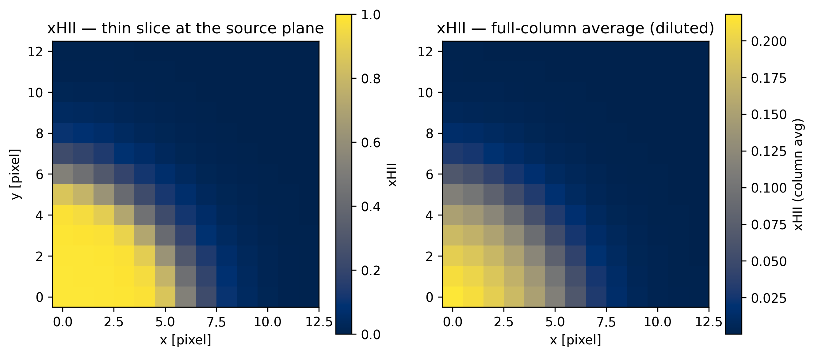
Ionization-state number densities
From the hydrogen density and the ionization fractions, Mera derives :n_HII, :n_HI and the free-electron density :n_e (all in cm⁻³). Here we use the vector form to fetch all three in one call. (n_e = n_HII for pure H; with helium tracked, Y>0 adds n_HeII + 2 n_HeIII.)
d = getvar(gas, [:n_HII, :n_HI, :n_e]) # → Dict of arrays
(n_HII_max = maximum(d[:n_HII]), n_HI_max = maximum(d[:n_HI]), n_e_max = maximum(d[:n_e]))(n_HII_max = 0.0009728974951602914, n_HI_max = 0.001000021635805913, n_e_max = 0.0009728974951602914)Mock recombination emission
A recombination-line image (e.g. Hα) is the line-of-sight integral of the emissivity j ∝ α(T)·nₑ·n_HII. getvar(gas, :em_recomb) returns the proxy n_HII² (valid here because the ionized gas is nearly isothermal); projecting it with mode=:sum gives a map proportional to the emission-measure column — the synthetic glow of the HII region.
em = projection(gas, :em_recomb, mode=:sum, verbose=false, show_progress=false)
show_map(em.maps[:em_recomb]; logscale=true, cmap="hot",
clabel=L"$\log_{10}\,\Sigma\,n_{HII}^2\,V$", ttl="Mock recombination emission")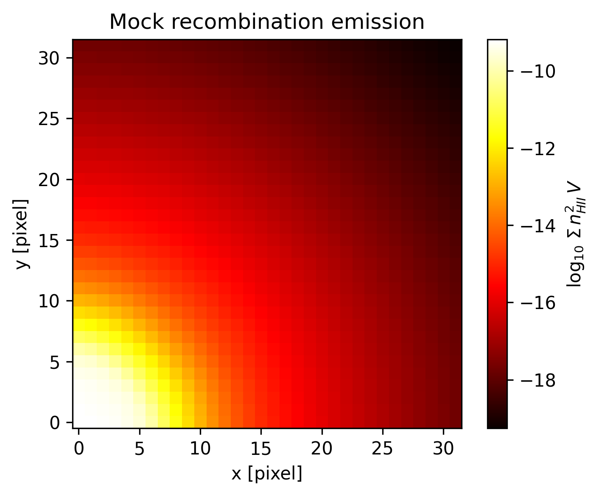
Strömgren climax: ionization & temperature profiles
The defining diagnostic — radially binned xHII(r) and T_rt(r) from the source (per-bin mean via radial_mean). The ionization front is the radius where xHII = 0.5; the temperature rises to ~10⁴ K inside (peaking at ~2×10⁴ K near the hard source) and falls outside. We compute r, xHII, T_rt here once and reuse them next.
r_kpc = getvar(gas, :r_sphere, :kpc, center=[0.0, 0.0, 0.0])
xh = getvar(gas, :xHII)
Trt = getvar(gas, :T_rt)
rc1, xhm = radial_mean(r_kpc, xh)
_, Tm = radial_mean(r_kpc, Trt)
ifront = rc1[something(findlast(x -> !isnan(x) && x > 0.5, xhm), 1)]
fig = figure(figsize=(6,4)); ax1 = gca()
ax1.plot(rc1, xhm, "-o", color="C0", ms=3); ax1.set_xlabel("r [kpc]"); ax1.set_ylabel("xHII", color="C0")
ax1.axvline(ifront, ls="--", color="gray"); ax1.text(ifront, 0.55, " I-front", color="gray")
ax2 = ax1.twinx(); ax2.plot(rc1, Tm, "-s", color="C3", ms=3); ax2.set_ylabel("T_rt [K]", color="C3")
title("Strömgren sphere: ionization & temperature"); tight_layout();
@show round(ifront, digits=2) # measured ionization-front radius [kpc]round(ifront, digits = 2) = 2.64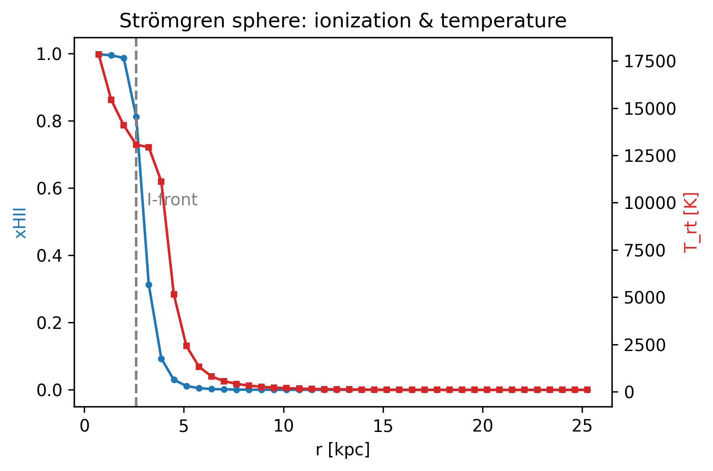
2.64Mean molecular weight μ and the temperature
The temperature follows T ∝ μ at fixed P/ρ, so the mean molecular weight matters. μ depends on the ionization state: for pure H, μ = 1/(1+xHII), running from 1.0 (neutral, since X=1 here) to 0.5 (fully ionized). Mera's plain :T (unit=:K) bakes in a constant μ ≈ 1/0.76 ≈ 1.32 (the fixed primordial default — independent of this run's X=1), so it over-estimates the ionized-gas temperature by μ_const/μ_local ≈ 1.32/0.5 ≈ 2.6× (matching the printed T_const/T_rt); :T_rt uses the local μ and recovers the physical temperature (~2×10⁴ K here). (μ also responds to metallicity via the :metallicity scalar when present; this test is metal-free.)
Because the medium is uniform and in photoionization equilibrium, T is single-valued in xHII — the cells trace a 1D relation, so a scatter (coloured by radius) is the honest plot; a 2D density–temperature phase heatmap would collapse to a line here and only becomes informative in a multiphase ISM/galaxy run.
q = getvar(gas, [:mu, :T, :T_rt], [:standard, :K, :K]) # vector vars + per-var units
figure(figsize=(9,4))
subplot(1,2,1); scatter(xh, q[:mu], s=2, alpha=0.3, color="teal")
axhline(1.0, ls="--", color="gray"); text(0.02, 1.02, "neutral μ = 1/X = 1.0 (X=1)", color="gray")
xlabel("xHII"); ylabel(L"\mu"); title("μ vs ionization")
subplot(1,2,2); sc = scatter(xh, log10.(q[:T_rt]), c=r_kpc, s=3, cmap="viridis")
colorbar(sc, label="r [kpc]"); xlabel("xHII"); ylabel(L"$\log_{10}\,T_{rt}$ [K]")
title("Ionization–temperature relation"); tight_layout();
(T_const_max = maximum(q[:T]), T_rt_max = maximum(q[:T_rt]))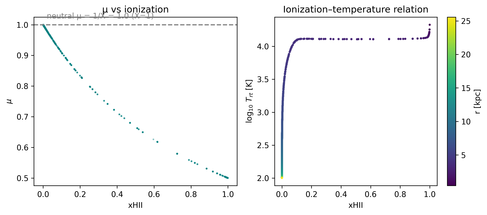
(T_const_max = 59005.52727864943, T_rt_max = 22422.814010465798)Radiation–matter rates & ionization balance
The radiation field drives the gas. From the RT object: the photoionization rate Γ_HI = Σ_g c·Np_g·σ_g s⁻¹ and the photoheating rate per HI atom. From the hydro object: the recombination rate α_B(T)·n_e·n_HII. In photoionization equilibrium these balance locally: Γ·n_HI ≈ α·n_e·n_HII.
Quantities that couple both objects (:photoionizations, :ionization_balance) are requested on the RT object with hydro_data=gas (both loaded over the same cells — Mera checks the alignment). The radial profile below shows the two rates tracking in shape through the ionized interior. They are not yet equal: at this early time t ≈ 20 Myr ≪ t_rec ≈ 120 Myr (t/t_rec ≈ 0.16) the front is still expanding toward R_S, so photoionizations currently outpace recombinations (core ratio ≈ 5 > 1). Exact local balance (ratio → 1) is reached only asymptotically (t ≫ t_rec).
@show maximum(getvar(rt, :Gamma_HI)) # photoionization rate [1/s]
@show maximum(getvar(rt, :photoheating_HI)) # photoheating per HI atom [erg/s]
# photoionizations (Γ·n_HI, couples rt+gas) vs recombinations (α_B(T)·n_e·n_HII, gas)
pion = getvar(rt, :photoionizations, hydro_data=gas)
rec = getvar(gas, :recomb_rate)
rcb, pion_r = radial_mean(r_kpc, pion)
_, rec_r = radial_mean(r_kpc, rec)
core = getvar(gas, :xHII) .> 0.9
@show round(sum(pion[core]) / sum(rec[core]), digits=2) # >1 ⇒ still ionizing (t ≪ t_rec); → 1 only as t ≫ t_rec
@show maximum(getvar(rt, :ionization_balance, hydro_data=gas)) # Γ·n_HI − α·n_e·n_HII
figure(figsize=(6,4))
semilogy(rcb, pion_r, "-o", ms=3, color="C0", label=L"photoionizations $\Gamma\,n_{HI}$")
semilogy(rcb, rec_r, "-s", ms=3, color="C3", label=L"recombinations $\alpha\,n_e\,n_{HII}$")
xlabel("r [kpc]"); ylabel(L"rate [cm$^{-3}$ s$^{-1}$]")
legend(loc="upper right"); title("Ionization balance (Γ·n_HI vs α·n_e·n_HII)"); tight_layout();maximum(getvar(rt, :Gamma_HI)) = 4.5615961435093065e-12
maximum(getvar(rt, :photoheating_HI)) = 5.436954544982253e-23
round(sum(pion[core]) / sum(rec[core]), digits = 2) = 5.27
maximum(getvar(rt, :ionization_balance, hydro_data = gas)) = 5.428058169900033e-18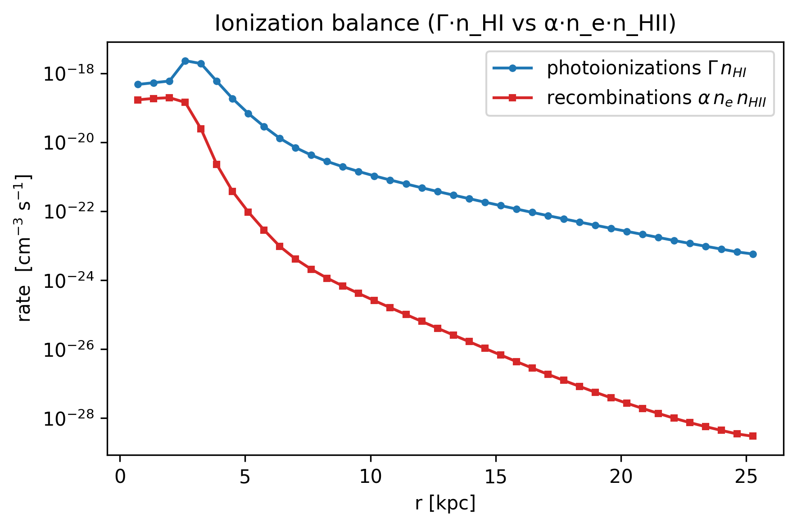
Physical units & the descriptor
getinfo parsed the RT descriptor (info_rt) into info.descriptor.rt: the unit factors unit_np/unit_pf, the per-group group_egy, and rtPhotonGroups (cross-sections, band edges). Two ways to physical units: dedicated cgs symbols (:Np1_cgs, :Fmag1_cgs, :rad_energy_density — these return fixed cgs and ignore a unit argument), and the general getvar(obj, :var, :unit) route for plain quantities (as we used for radius in kpc). We lead with the radiation energy density u = Np·unit_np·egy — it carries the eV factor and is genuinely ~10⁻¹³ erg cm⁻³. (Here Np1_cgs happens to equal the code value only because unit_np≈1 in this run.)
@show info.descriptor.rt[:group_egy]
@show info.descriptor.rtPhotonGroups[1] # band 1: egy_eV, csn_cm2, cse_cm2
@show maximum(getvar(rt, :rad_energy_density)) # [erg cm^-3]
@show extrema(getvar(rt, :Np1_cgs)) # = code value here only (unit_np≈1)
um = projection(rt, :rad_energy_density, mode=:sum, verbose=false, show_progress=false)
show_map(um.maps[:rad_energy_density]; logscale=true, cmap="magma",
clabel=L"$\log_{10}\,\Sigma\,u_{\rm rad}\,V$", ttl="Radiation energy density (Σ over column)")info.descriptor.rt[:group_egy] = [18.85, 35.08, 65.67]
info.descriptor.rtPhotonGroups[1] = Dict{Symbol, Any}(:cse_cm2 => [2.78e-18, 0.0, 0.0], :egy_eV => 18.85, :csn_cm2 => [3.0e-18, 0.0, 0.0])
maximum(getvar(rt, :rad_energy_density)) = 4.4407821448620317e-13
extrema(getvar(rt, :Np1_cgs)) = (3.065945823640658e-50, 0.0041809294396080166)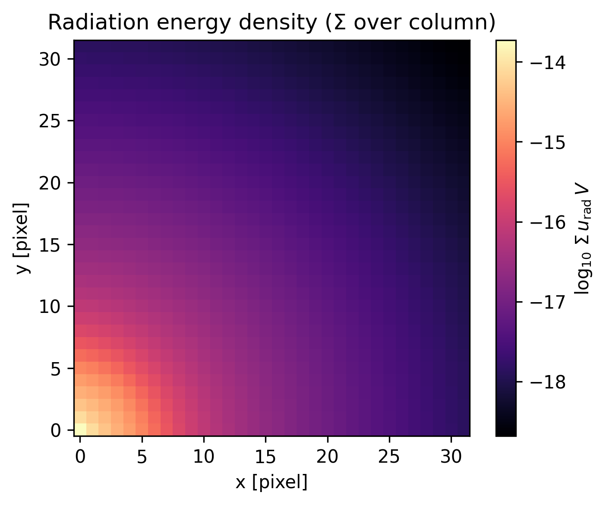
Further quantities & a quantitative Strömgren check
Other RT quantities are one call each (per-group reduced flux, physical flux, per-group energy density, neutral fraction :xHI). Finally we close the loop on the physics we expected: compute the Strömgren radius from the source rate and compare to the measured front. Ṅγ is a hand-entered namelist constant (not in the cell data); α_B is the case-B coefficient at ~10⁴ K; n_H comes from the data. At this early time t ≪ t_rec, so the front is still expanding toward R_S — the right comparison is the time-dependent r_I(t) = R_S(1-e^{-t/t_rec})^{1/3}.
@show maximum(getvar(rt, :reducedflux1))
@show maximum(getvar(rt, :Fmag1_cgs))
@show maximum(getvar(rt, :photon_energy_density1))
@show extrema(getvar(gas, :xHI))
Ndot = 5.0e48; alpha_B = 2.59e-13; kpc = 3.085677e21 # Ṅγ from stromgren.nml; case-B α_B
nH = mean(getvar(gas, :n_HII) .+ getvar(gas, :n_HI)) # total H [cm^-3]
R_S = (3Ndot / (4π * alpha_B * nH^2))^(1/3) / kpc # asymptotic Strömgren radius [kpc]
t = info.time * info.scale.s; t_rec = 1 / (alpha_B * nH)
r_I = R_S * (1 - exp(-t / t_rec))^(1/3) # time-dependent I-front [kpc]
println("n_H = ", round(nH, sigdigits=3), " cm^-3")
println("R_S (asymptotic) = ", round(R_S, digits=2), " kpc")
println("r_I(t=", round(info.time*info.scale.Myr, digits=0), " Myr) = ", round(r_I, digits=2),
" kpc (t_rec = ", round(t_rec/3.156e13, digits=0), " Myr)")
println("measured front = ", round(ifront, digits=2), " kpc → still expanding toward R_S")maximum(getvar(rt, :reducedflux1)) = 0.9927071564466189
maximum(getvar(rt, :Fmag1_cgs)) = 52776.7314775328
maximum(getvar(rt, :photon_energy_density1)) = 1.2626837355582949e-13
extrema(getvar(gas, :xHI)) = (6.36534360656249e-5, 0.9999985964787559)
n_H = 0.001 cm^-3
R_S (asymptotic) = 5.39 kpc
r_I(t=20.0 Myr) = 2.87 kpc (t_rec = 122.0 Myr)
measured front = 2.64 kpc → still expanding toward R_SSummary — RT calls at a glance
| call | result |
|---|---|
getinfo(output, path) | read the snapshot header + RT descriptor → InfoType |
getrt(info) | load RT leaf-cells → RtDataType |
getvar(rt, :Np1) / [:Np1,:Fx1,:Fy1] | one / several photon fields |
getvar(rt, :Fmag1), :Np_total, :reducedflux1 | flux magnitude, total density, reduced flux |
getvar(rt, :r_sphere, :kpc, center=…) | geometry + unit conversion |
subregion / shellregion | spatial selection on RT |
projection(rt, var; mode=:standard/:sum) | 2D average / sum map (volume-weighted) |
info.descriptor.rt[:group_egy], rtPhotonGroups | photon-group / energy-band properties |
gethydro(info) → :xHII, :xHI | ionization state (via iIons) |
getvar(gas, [:n_HII,:n_HI,:n_e]) | ionization-state densities [cm⁻³] |
getvar(rt, :Gamma_HI), :photoheating_HI | photoionization / photoheating rate |
getvar(gas, :recomb_rate) | case-B recombination rate [cm⁻³ s⁻¹] |
getvar(rt, :ionization_balance, hydro_data=gas) | radiation–gas coupling (Γ·nHI − α·nₑ·nHII) |
getvar(gas, :em_recomb) | recombination-emission proxy n_HII² |
getvar(gas, [:mu,:T,:T_rt],[…]) | μ and RT-aware temperature [K] |
getvar(rt, :Np1_cgs), :rad_energy_density | physical (cgs) photon density / energy density |
Strömgren check: R_S, r_I(t) vs measured I-front | quantitative validation (closes the opening prediction) |
Photon transport (rt) and ionization state (gas) are separate objects bridged by iIons; everything runs through the one getvar / projection pipeline.